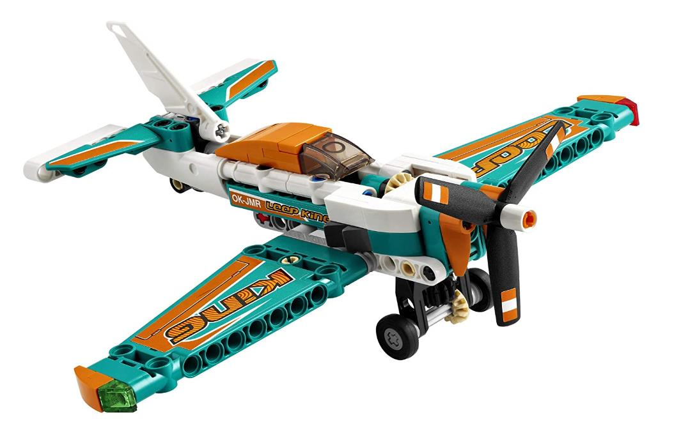
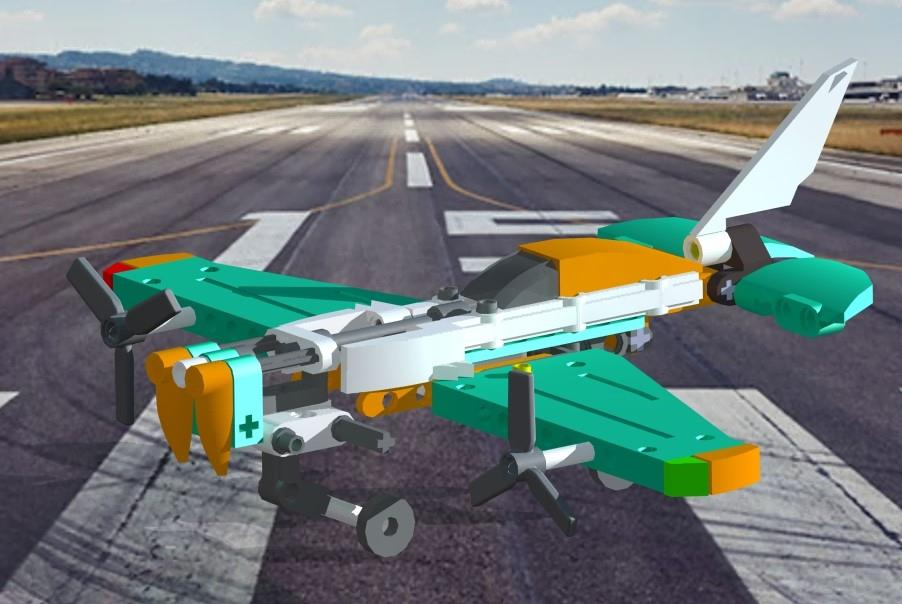
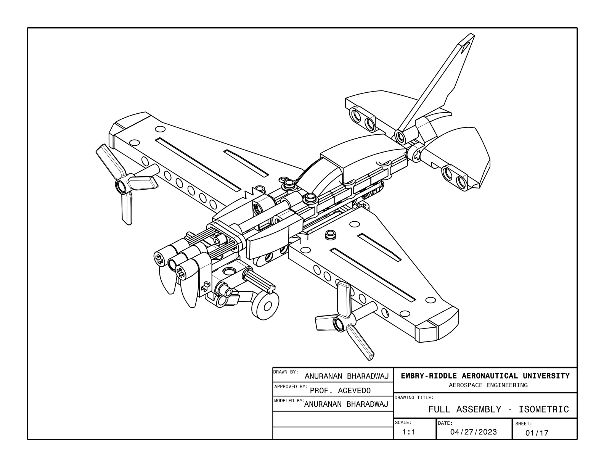
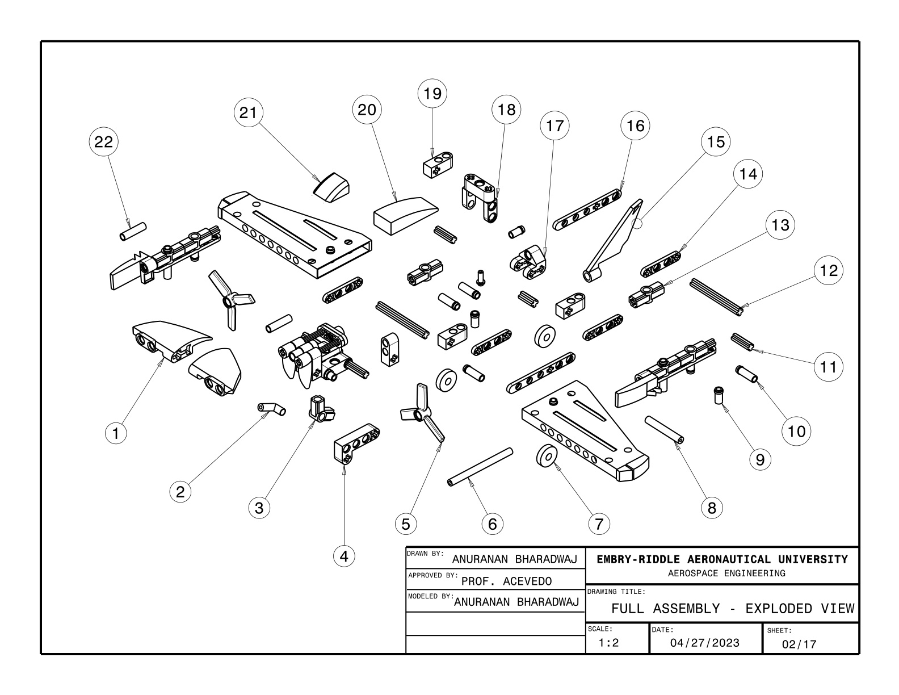
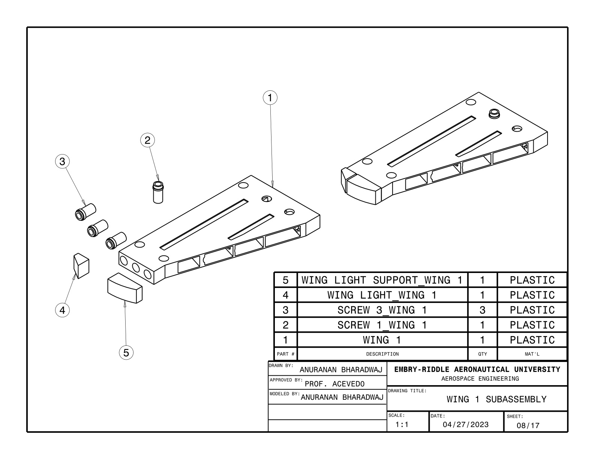
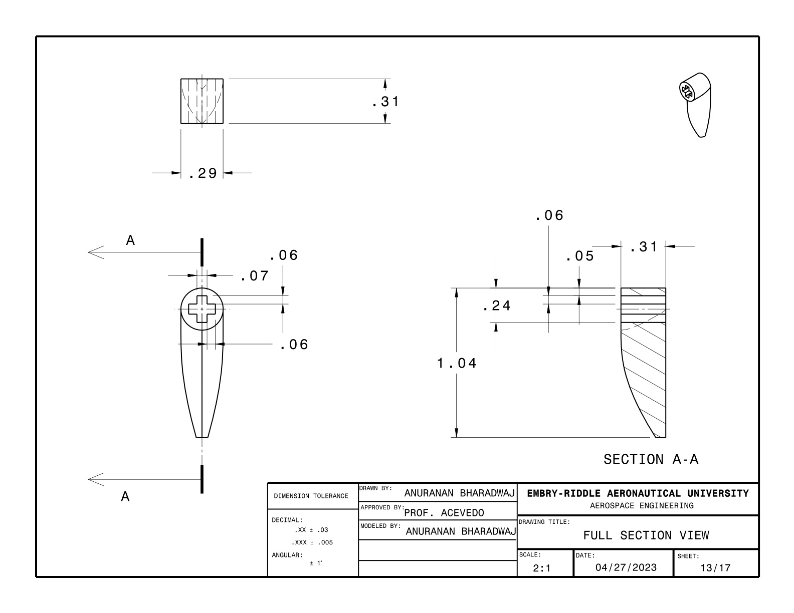
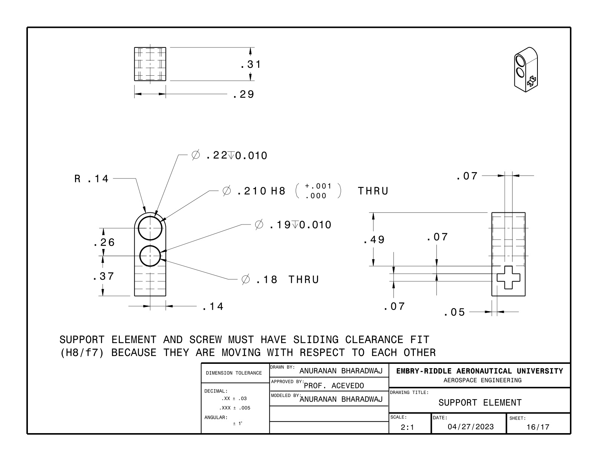

LEGO Airplane Design & Engineering Documentation
Engineering Design · ERAU
Role
Individual project, 3D modeling & drawing package
EGR 120: Introduction to Engineering · Spring 2023
Tools
CATIA (3D modeling, rendering, engineering drawings, GD&T)
Key Contributions
- Measured every part of a physical LEGO Technic race plane by hand (about ±0.1 mm) and modeled the full assembly from scratch in CATIA
- Changed the configuration to twin wing-mounted propellers and a tricycle landing gear layout
- Produced a 17 sheet engineering drawing package with GD&T
- Produced a CATIA render and a rendered image composited on a runway background
This page documents an EGR 120 individual project: a LEGO Technic race plane measured by hand, modeled from scratch in CATIA, redesigned with twin propellers and tricycle landing gear, and documented in a 17 sheet drawing package with GD&T.
Project Overview
This was an individual project in EGR 120, a freshman 3D modeling course. The starting point was a physical LEGO Technic race plane. I measured every part by hand and modeled the full assembly from scratch in CATIA, then documented it in a 17 sheet engineering drawing package with GD&T. All 3D modeling, rendering, and drawings were done in CATIA.
The course required changes to the physical model, so the CATIA design differs from the original in its propulsion and landing gear layout.
- Measure a physical LEGO Technic race plane and model every part in CATIA
- Change the propulsion and landing gear configuration of the physical model
- Document the assembly in a 17 sheet engineering drawing package with GD&T
- Produce a CATIA render and a rendered image composited on a runway background


3D Modeling & Rendering
I measured every part of the physical LEGO Technic race plane by hand with calipers and rules. Measurement uncertainty was about ±0.1 mm. Where a feature could not be measured directly, I made engineering assumptions. I then modeled each part from scratch in CATIA.
The assembly has a very high part count, which was the hardest part of the project. No 3D models of LEGO parts were available online, unlike nuts and bolts, which can be downloaded from McMaster-Carr, so no part could be imported.
The course required changes to the physical model. I made two design decisions.
Design Decision
Change: The physical plane has a single nose propeller. I changed it to two propellers mounted on the wings (twin-propeller configuration).
Why: This was the first of the required changes to the physical model. It is a configuration change only. I did not do propulsion analysis.
Design Decision
Change: The physical plane has two front wheels and one rear wheel. I changed it to a tricycle layout, with a single nose wheel and two main wheels at the back, like commercial aircraft.
Why: Twin propellers mean more thrust and more weight, so I wanted a configuration that is more stable on the ground.
The CATIA model was rendered, and the rendered image was composited on a runway background.

Engineering Drawing Package
The 17 sheet drawing package was produced in CATIA and documents the assembly. Each sheet uses a consistent title block with scale, date, and sheet number, and the package includes GD&T.
The package includes:
- Full assembly isometric view (Sheet 01)
- Exploded view with 22 numbered part callouts (Sheet 02)
- Subassembly drawings, such as the wing (Sheet 08)
- Section view (Sheet 13)
- Detail drawing with GD&T and fit tolerances (Sheet 16)
On Sheet 16, the support element and screw are specified with an H8/f7 sliding clearance fit because they move relative to each other.





Key Takeaways
Modeling from scratch with no part library
No 3D models of LEGO parts were available online, unlike standard hardware such as nuts and bolts, which can be downloaded from McMaster-Carr. Every part was modeled from scratch, and the very high part count made this the hardest part of the project.
Measuring by hand and managing assumptions
I measured each part with calipers and rules, with an uncertainty of about ±0.1 mm. Where a feature could not be measured directly, I made an engineering assumption and carried it through the model.
Configuration changes need a stated reason
The course required changes to the physical model. I moved from one nose propeller to two wing-mounted propellers, and from two front wheels and one rear wheel to a tricycle layout. Twin propellers mean more thrust and more weight, so I chose the layout I expected to be more stable on the ground. I did not do propulsion analysis.
Drawings and GD&T as documentation
The 17 sheet package covers the assembly, an exploded view, subassemblies, a section view, and a detail sheet with fit tolerances. Specifying an H8/f7 fit for parts that move relative to each other showed me how tolerance choices follow from how a part is used.